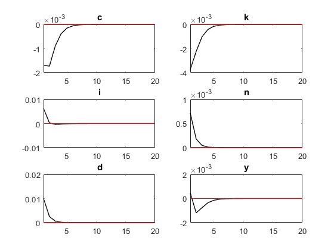

Contents
clear all; close all;
Warning: The file 'C:\Program
Files\MATLAB\R2017b\toolbox\matlab\codetools\private\evalmxdom.m' could not be
cleared because it contains MATLAB code that is currently executing.
Warning: The file
'C:\Users\Nmath_000\Documents\MATLAB\dynare\work\run_hw_q3_dynare.m' could not
be cleared because it contains MATLAB code that is currently executing.
Warning: The file 'C:\Program
Files\MATLAB\R2017b\toolbox\matlab\codetools\mdbpublish.m' could not be cleared
because it contains MATLAB code that is currently executing.
Warning: The file 'C:\Program
Files\MATLAB\R2017b\toolbox\matlab\codetools\publish.p' could not be cleared
because it contains MATLAB code that is currently executing.
Warning: The file 'C:\Program
Files\MATLAB\R2017b\toolbox\matlab\codetools\private\evalmxdom.m' could not be
cleared because it contains MATLAB code that is currently executing.
Warning: The file
'C:\Users\Nmath_000\Documents\MATLAB\dynare\work\run_hw_q3_dynare.m' could not
be cleared because it contains MATLAB code that is currently executing.
Warning: The file 'C:\Program
Files\MATLAB\R2017b\toolbox\matlab\codetools\mdbpublish.m' could not be cleared
because it contains MATLAB code that is currently executing.
Warning: The file 'C:\Program
Files\MATLAB\R2017b\toolbox\matlab\codetools\publish.p' could not be cleared
because it contains MATLAB code that is currently executing.
Warning: The file 'C:\Program
Files\MATLAB\R2017b\toolbox\matlab\codetools\private\evalmxdom.m' could not be
cleared because it contains MATLAB code that is currently executing.
Warning: The file
'C:\Users\Nmath_000\Documents\MATLAB\dynare\work\run_hw_q3_dynare.m' could not
be cleared because it contains MATLAB code that is currently executing.
Warning: The file 'C:\Program
Files\MATLAB\R2017b\toolbox\matlab\codetools\mdbpublish.m' could not be cleared
because it contains MATLAB code that is currently executing.
Warning: The file 'C:\Program
Files\MATLAB\R2017b\toolbox\matlab\codetools\publish.p' could not be cleared
because it contains MATLAB code that is currently executing.
set workind directory
cd C:\Users\Nmath_000\Documents\MATLAB\dynare\work
calculate steady states for parms
beta_i = .99
dbar_i = .025
alpha_i = .35
neta_i = .5
phi_i = .2886
rho_i = .95
sigmae_i = .01
K_ss = (((1/beta_i) - (1-dbar_i))/alpha_i)^(1/(alpha_i - 1))
I_ss = dbar_i*K_ss
C_ss = K_ss^alpha_i - I_ss
beta_i =
0.9900
dbar_i =
0.0250
alpha_i =
0.3500
neta_i =
0.5000
phi_i =
0.2886
rho_i =
0.9500
sigmae_i =
0.0100
K_ss =
34.3982
I_ss =
0.8600
C_ss =
2.5898
Running Dynare simulations for different rho
for rho_i = [.95 .25]
dynare hw3_q3_dynare
fullFileName = strcat('C:\Users\Nmath_000\Documents\MATLAB\plots\hw3\hw3_q3_ir_rho_', num2str(rho_i), '.png')
saveas(gcf, fullFileName)
end
Configuring Dynare ...
[mex] Generalized QZ.
[mex] Sylvester equation solution.
[mex] Kronecker products.
[mex] Sparse kronecker products.
[mex] Local state space iteration (second order).
[mex] Bytecode evaluation.
[mex] k-order perturbation solver.
[mex] k-order solution simulation.
[mex] Quasi Monte-Carlo sequence (Sobol).
[mex] Markov Switching SBVAR.
Using 64-bit preprocessor
Starting Dynare (version 4.5.3).
Starting preprocessing of the model file ...
Found 6 equation(s).
Evaluating expressions...done
Computing static model derivatives:
- order 1
Computing dynamic model derivatives:
- order 1
Processing outputs ...
done
Preprocessing completed.
STEADY-STATE RESULTS:
c -0.642747
k -1.63057
i -1.63057
n 0.37616
d 0
y -0.326196
MODEL SUMMARY
Number of variables: 6
Number of stochastic shocks: 1
Number of state variables: 2
Number of jumpers: 2
Number of static variables: 3
MATRIX OF COVARIANCE OF EXOGENOUS SHOCKS
Variables e
e 0.000100
POLICY AND TRANSITION FUNCTIONS
c k i n d y
Constant -0.642747 -1.630573 -1.630568 0.376160 0 -0.326196
k(-1) 0.350000 0.350000 0.349998 0 0 0.350000
d(-1) -0.015054 -0.894228 0.055772 0.006406 0.950000 0.004164
e -0.015847 -0.941292 0.058707 0.006743 1.000000 0.004383
THEORETICAL MOMENTS
VARIABLE MEAN STD. DEV. VARIANCE
c -0.6427 0.0164 0.0003
k -1.6306 0.0455 0.0021
i -1.6306 0.0142 0.0002
n 0.3762 0.0002 0.0000
d 0.0000 0.0320 0.0010
y -0.3262 0.0158 0.0002
MATRIX OF CORRELATIONS
Variables c k i n d y
c 1.0000 0.9778 0.9985 -0.9469 -0.9469 0.9999
k 0.9778 1.0000 0.9650 -0.9933 -0.9933 0.9750
i 0.9985 0.9650 1.0000 -0.9281 -0.9281 0.9992
n -0.9469 -0.9933 -0.9281 1.0000 1.0000 -0.9426
d -0.9469 -0.9933 -0.9281 1.0000 1.0000 -0.9426
y 0.9999 0.9750 0.9992 -0.9426 -0.9426 1.0000
COEFFICIENTS OF AUTOCORRELATION
Order 1 2 3 4 5
c 0.9770 0.9377 0.8941 0.8505 0.8084
k 0.9756 0.9358 0.8921 0.8486 0.8066
i 0.9679 0.9258 0.8817 0.8384 0.7967
n 0.9500 0.9025 0.8574 0.8145 0.7738
d 0.9500 0.9025 0.8574 0.8145 0.7738
y 0.9752 0.9352 0.8915 0.8480 0.8060
Total computing time : 0h00m02s
fullFileName =
'C:\Users\Nmath_000\Documents\MATLAB\plots\hw3\hw3_q3_ir_rho_0.95.png'
Configuring Dynare ...
[mex] Generalized QZ.
[mex] Sylvester equation solution.
[mex] Kronecker products.
[mex] Sparse kronecker products.
[mex] Local state space iteration (second order).
[mex] Bytecode evaluation.
[mex] k-order perturbation solver.
[mex] k-order solution simulation.
[mex] Quasi Monte-Carlo sequence (Sobol).
[mex] Markov Switching SBVAR.
Using 64-bit preprocessor
Starting Dynare (version 4.5.3).
Starting preprocessing of the model file ...
Found 6 equation(s).
Evaluating expressions...done
Computing static model derivatives:
- order 1
Computing dynamic model derivatives:
- order 1
Processing outputs ...
done
Preprocessing completed.
STEADY-STATE RESULTS:
c -0.642747
k -1.63057
i -1.63057
n 0.37616
d -3.46945e-18
y -0.326196
MODEL SUMMARY
Number of variables: 6
Number of stochastic shocks: 1
Number of state variables: 2
Number of jumpers: 2
Number of static variables: 3
MATRIX OF COVARIANCE OF EXOGENOUS SHOCKS
Variables e
e 0.000100
POLICY AND TRANSITION FUNCTIONS
c k i n d y
Constant -0.642747 -1.630573 -1.630568 0.376160 0 -0.326196
k(-1) 0.350000 0.350000 0.349998 0 0 0.350000
d(-1) -0.042230 -0.093548 0.156452 0.017970 0.250000 0.011681
e -0.168921 -0.374190 0.625806 0.071881 1.000000 0.046723
THEORETICAL MOMENTS
VARIABLE MEAN STD. DEV. VARIANCE
c -0.6427 0.0026 0.0000
k -1.6306 0.0045 0.0000
i -1.6306 0.0063 0.0000
n 0.3762 0.0007 0.0000
d -0.0000 0.0103 0.0001
y -0.3262 0.0015 0.0000
MATRIX OF CORRELATIONS
Variables c k i n d y
c 1.0000 0.9611 -0.6423 -0.8099 -0.8099 0.5260
k 0.9611 1.0000 -0.8290 -0.9404 -0.9404 0.2707
i -0.6423 -0.8290 1.0000 0.9698 0.9698 0.3139
n -0.8099 -0.9404 0.9698 1.0000 1.0000 0.0729
d -0.8099 -0.9404 0.9698 1.0000 1.0000 0.0729
y 0.5260 0.2707 0.3139 0.0729 0.0729 1.0000
COEFFICIENTS OF AUTOCORRELATION
Order 1 2 3 4 5
c 0.7153 0.3417 0.1424 0.0556 0.0209
k 0.5517 0.2435 0.0978 0.0374 0.0139
i 0.0414 -0.0626 -0.0412 -0.0192 -0.0079
n 0.2500 0.0625 0.0156 0.0039 0.0010
d 0.2500 0.0625 0.0156 0.0039 0.0010
y 0.2835 0.0826 0.0248 0.0076 0.0024
Total computing time : 0h00m01s
fullFileName =
'C:\Users\Nmath_000\Documents\MATLAB\plots\hw3\hw3_q3_ir_rho_0.25.png'
